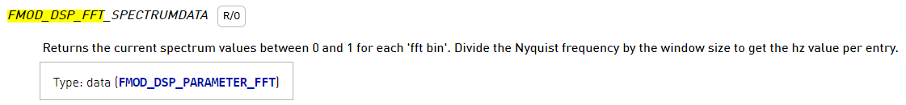

This page contains general information related to working with the FMOD extension.
Handles¶
Both the FMOD Core API and FMOD Studio API are accessed through a number of FMOD objects. Examples of these are: System, Sound, Studio::System and Studio::Bank.
These objects are represented in the extension by handles, which are largely identical to handles in GameMaker (See Data Types). More precisely, handles used by the extension store an instance of an FMOD object as follows:
- The lowest 32 bits store the index of the object instance.
- The next 8 bits store the object type.
- The last 10 bits identify the extension.
To create an instance of an FMOD object and get its handle, you call an extension function that returns a handle. Many FMOD objects can be created using the fmod_system_create_* functions. For example:
gml
system = fmod_system_create();
sound_group = fmod_system_create_sound_group("SoundGroup");
// Etc.
Warning
While these handles are internally represented in the same way as GameMaker's built-in handles, they are not true handles from GameMaker's perspective.
Error Handling¶
In FMOD, functions always return whether they executed successfully. If not, they return an error code explaining the error that occurred.
Most functions of the FMOD extension don't return this FMOD result directly. Instead, when you call a function of the FMOD extension, the result of the last called function is stored internally with the extension. You can retrieve this value using the function fmod_last_result. For example:
gml
system = fmod_system_create();
result = fmod_last_result();
show_debug_message("Result of fmod_system_create: {0}", result);
Note
fmod_last_result returns FmodResult.Ok in case there were no errors.
Bug Reports¶
If you experience a crash when using the FMOD extension, please create a bug report. This allows the GameMaker team to look into the issue and improve the FMOD extension.
Working with DSP Parameters¶
The FMOD extension allows you to get and set DSP parameters. The different parameters that you can get and set can be found on the Effect Parameters page as well as in the extension's Fmod_Definitions script asset.
The FMOD extension has the following functions to get and set DSP parameters:
- fmod_dsp_get_parameter_int / fmod_dsp_set_parameter_int
- fmod_dsp_get_parameter_float / fmod_dsp_set_parameter_float
- fmod_dsp_get_parameter_bool / fmod_dsp_set_parameter_bool
- fmod_dsp_get_parameter_data / fmod_dsp_set_parameter_data
You should make sure to always use the extension function that corresponds to the data type that you want to get or set.
Simple Parameters¶
These are the integer, float and boolean DSP parameters. You can get or set them with a single function call.
For example, to set the type and size of an FFT DSP's window:
gml
fmod_dsp_set_parameter_int(dsp_fft, FmodDspFft.WindowType, FmodDspFftWindowType.Rect);
fmod_dsp_set_parameter_int(dsp_fft, FmodDspFft.WindowSize, 16384);
Since the FMOD_DSP_FFT_WINDOWTYPE and FMOD_DSP_FFT_WINDOWSIZE variables of the FMOD_DSP_FFT struct are both of type int, you should get them with fmod_dsp_get_parameter_int and set them with fmod_dsp_set_parameter_int.
Similarly, a FMOD_DSP_HIGHPASS DSP's parameters are of type float. So you should get the parameters with fmod_dsp_get_parameter_float and set them with fmod_dsp_get_parameter_float:
``gml // Set fmod_dsp_set_parameter_float(dsp_hpf, FmodDspHighPass.Cutoff, 10000); fmod_dsp_set_parameter_float(dsp_hpf, FmodDspHighPass.Resonance, 4);
// Get var _cutoff = fmod_dsp_get_parameter_float(dsp_hpf, FmodDspHighPass.Cutoff); var _resonance = fmod_dsp_get_parameter_float(dsp_hpf, FmodDspHighPass.Resonance); ``
Data Parameters¶
The more complex DSP parameters are of a type that's referred to in the FMOD documentation as data. The FMOD extension allows you to set and get this data by writing to and reading from a Buffer respectively.
Note
the function fmod_dsp_get_parameter_data returns the size of the data (in bytes). You need to resize the buffer if it's not large enough to store the data.
The mapping between FMOD's data structs and the same data in a Buffer may not be straightforward, however. This section explains how you can read from and write to a buffer in the format that FMOD uses.
We'll have a look at two particular cases:
- FMOD structs with a pointer variable:
FMOD_DSP_FFT. The extension copies the data the pointer points to into the buffer. - FMOD structs that contain other FMOD structs, i.e. nested structs. In the buffer this nested data is "flattened".
Note
See Guide_To_Using_Buffers for more information on how to work with buffers.
FMOD_DSP_FFT¶
The FMOD_DSP_FFT DSP is an example of a DSP type that has a data parameter with a pointer variable: FMOD_DSP_FFT_SPECTRUMDATA. This is shown in the FMOD documentation as:

You get the data of this parameter as follows:
gml
fmod_dsp_get_parameter_data(dsp_fft, FmodDspFft.SpectrumData, fft_buffer);
The FMOD extension will write the data to the buffer fft_buffer that you pass it.
How this data looks can be found under FMOD_DSP_PARAMETER_FFT, which is defined like this:
C++
typedef struct FMOD_DSP_PARAMETER_FFT {
int length;
int numchannels;
float *spectrum[32];
} FMOD_DSP_PARAMETER_FFT;
Here, length stores the length of the spectrum array of a single channel (i.e. the number of values included in the spectrum). numchannels stores the number of channels for which there is spectrum data.
If you read these variable definitions line by line, you have:
An int followed by an int, followed by at most 32 times length floats. spectrum is an array of pointers (the asterisk * refers to a pointer), which indicates that the memory for each array is not included in the FMOD_DSP_PARAMETER_FFT struct itself, but rather in the memory that the pointer to that array points to. You don't need to do any buffer copying yourself however, as the extension copies these blocks of data to the buffer one after the other.
Looking at the Data Type Mapping Table, you see that this corresponds to 2 times a buffer_s32, followed by numchannels blocks of spectrum data consisting of length buffer_f32 values. So the layout of the data in the buffer will be the following:
|Channel | |Channel 0 |Channel 1 | ... |
|FMOD |int |int |float |float | ... |float |float |float | ... |float | ... |
|Buffer |buffer_s32|buffer_s32 |buffer_f32 |buffer_f32 | ... |buffer_f32 |buffer_f32 |buffer_f32 | ... |buffer_f32 | ... |
|Variable|length |numchannels|spectrum[0][0]|spectrum[0][1]| ... |spectrum[0][length-1]|spectrum[1][0]|spectrum[1][1]| ... |spectrum[1][length-1]| ... |
|Offset |0 |4 |8 |12 | ... |8 + (length-1)*4 |... | | | | ... |
To read this data from the buffer, you'd do:
gml
buffer_seek(fft_buffer, buffer_seek_start, 0);
var _length = buffer_read(fft_buffer, buffer_s32);
var _numchannels = buffer_read(fft_buffer, buffer_s32);
var _spectrum = array_create(_numchannels), _channel_index = 0, _bin_index;
repeat(_numchannels)
{
_spectrum[_channel_index] = array_create(_length);
_bin_index = 0;
repeat(_length)
{
_spectrum[_channel_index][_bin_index++] = buffer_read(fft_buffer, buffer_f32);
}
_channel_index++;
}
FMOD_DSP_OBJECTPAN¶
The FMOD_DSP_OBJECTPAN DSP is a second example of a DSP type that has a data parameter. It actually has a number of data parameters: FMOD_DSP_OBJECTPAN_3D_POSITION, FMOD_DSP_OBJECTPAN_OVERALL_GAIN, and FMOD_DSP_OBJECTPAN_ATTENUATION_RANGE.
In this example we'll look at the FMOD_DSP_OBJECTPAN_3D_POSITION parameter, since it has nested structs. This parameter is of type FMOD_DSP_PARAMETER_3DATTRIBUTES_MULTI:
You get the data of this parameter as follows:
gml
fmod_dsp_get_parameter_data(dsp_pan, FMOD_DSP_OBJECTPAN._3D_POSITION, pan_buffer);
The FMOD extension will write the data to the buffer pan_buffer that you pass it.
The struct FMOD_DSP_PARAMETER_3DATTRIBUTES_MULTI is defined as follows:
C++
typedef struct FMOD_DSP_PARAMETER_3DATTRIBUTES_MULTI {
int numlisteners;
FMOD_3D_ATTRIBUTES relative[FMOD_MAX_LISTENERS];
float weight[FMOD_MAX_LISTENERS];
FMOD_3D_ATTRIBUTES absolute;
} FMOD_DSP_PARAMETER_3DATTRIBUTES_MULTI;
Here, relative and weight are arrays. relative is an array of structs of type FMOD_3D_ATTRIBUTES:
C++
typedef struct FMOD_3D_ATTRIBUTES {
FMOD_VECTOR position;
FMOD_VECTOR velocity;
FMOD_VECTOR forward;
FMOD_VECTOR up;
} FMOD_3D_ATTRIBUTES;
All variables in this struct are also structs. Each variable is of type FMOD_VECTOR:
C++
typedef struct FMOD_VECTOR {
float x;
float y;
float z;
} FMOD_VECTOR;
Bringing all that together, an FMOD_DSP_PARAMETER_3DATTRIBUTES_MULTI struct looks as follows:
An int, followed by FMOD_MAX_LISTENERS times the following: 4 times 3 floats in a row (x, y and z), followed by FMOD_MAX_LISTENERS times a float that stores a weight, followed by another 4 times 3 floats (each also x, y and z).
To get and read the data from the buffer, you'd do:
``gml function read_vector(_buffer) { var _x = buffer_read(_buffer, buffer_f32); var _y = buffer_read(_buffer, buffer_f32); var _z = buffer_read(_buffer, buffer_f32);
return {x: _x, y: _y, z: _z};}
function read_3d_attributes(_buffer) { var _position = read_vector(_buffer); var _velocity = read_vector(_buffer); var _forward = read_vector(_buffer); var _up = read_vector(_buffer);
return {position: _position, velocity: _velocity, forward: _forward, up: _up};}
buffer_seek(pan_buffer, buffer_seek_start, 0);
var _numlisteners, _relative, _weight, _absolute; var _pan_per_listener = array_create(_numlisteners);
_numlisteners = buffer_read(pan_buffer, buffer_s32);
for(var i = 0;i < FMOD_MAX_LISTENERS;i++)
{
_relative = read_3d_attributes(pan_buffer);
if (i < FMOD_MAX_LISTENERS)
{
// Valid listener index
_pan_per_listener[i] = {relative: _relative};
}
}
for(var i = 0;i < FMOD_MAX_LISTENERS;i++)
{
_weight = buffer_read(pan_buffer, buffer_f32);
if (i < FMOD_MAX_LISTENERS)
{
// Valid listener index
_pan_per_listener[i].weight = _weight;
}
}
_absolute = read_3d_attributes(pan_buffer);
`
The code example above shows how to read theFMOD_DSP_OBJECTPAN_3D_POSITIONparameter, which is of typeFMOD_DSP_PARAMETER_3DATTRIBUTES_MULTI.
First, two functionsread_vectorandread_3d_attributesare defined to read aFMOD_VECTORand aFMOD_3D_ATTRIBUTESfrom the buffer and return them as a [Struct](https://manual.gamemaker.io/monthly/en/GameMaker_Language/GML_Overview/Structs.htm).
Then, the number of listeners is read and twoforloops are executed, each loop executesFMOD_MAX_LISTENERStimes. The first loop assigns a struct to the variable_pan_per_listenerat the current listener index. The second loop assigns that struct the weight as an additional attributeweight.
Note that you always have to execute the loop this number of times. If_numlistenersis less thanFMOD_MAX_LISTENERS, the required calls to [buffer_read](https://manual.gamemaker.io/monthly/en/GameMaker_Language/GML_Reference/Buffers/buffer_read.htm) to "skip" the remaining unused listener data won't happen and subsequent reads will give wrong results.
Also note that you cannot readrelativeandweightin the sameforloop. This is because the buffer stores all relative data, followed by all weights.
Finally, the absolute pan properties are read with another call toread_3d_attributes`.
Data Type Mapping Table¶
The following table provides the mapping of FMOD (C++) data types to GameMaker's buffer data types.
| FMOD C++ data type | Buffer data type |
|---|---|
int |
buffer_s32 |
unsigned int |
buffer_u32 |
float |
buffer_f32 |
double |
buffer_f64 |
bool |
buffer_bool |
| struct | See the FMOD docs |
type[num] (array) |
num times data of type |